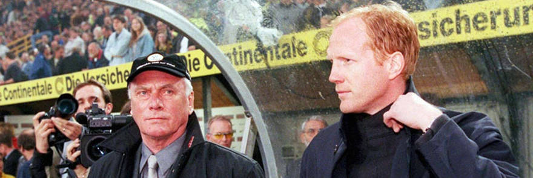
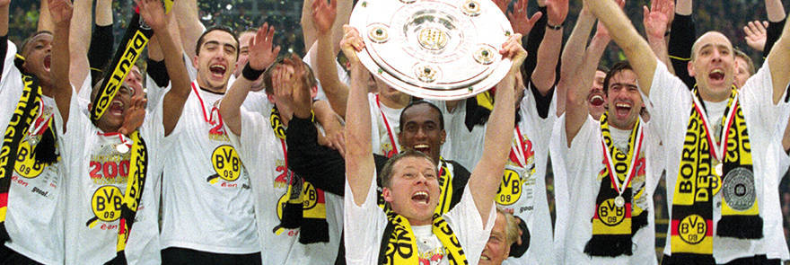

14/04/2000
A job for two men: Lattek and Sammer to rescue BVB

According to Kicker sports magazine, Udo Lattek’s first appearance
at the BVB training ground at ”Rabenloh“ was like the arrival of
an alien. Little wonder then the appointment of the renowned yet
believed to have retired 65-year-old to the position of coach at
BVB is pretty sensational news. At his side he will have the
coaching novice, 32-year-old Matthias Sammer who would not
complete his licence until two months later. Perhaps the job of
pulling together a crisis-riddled team without a win in 12 games
really is a job for two men. The two men have clearly defined
roles. Udo Lattek, media savvy and a great motivator is charged
with taking the pressure off the players while perfectionist and
analyst Matthias Sammer will be responsible for tactics. The
mission is accomplished. BVB take eight points from their last
five games and climb to eleventh in the table. Udo Lattek calls it
a day at the end of those stressful final weeks and returns to his
role as a TV commentator. New boy Sammer takes the reigns alone
moving forward.
31/10/2000
BVB flotation: The future starts now
BVB have often been at the forefront of things on the field. They
were the first club to become champions twice with exactly the
same eleven; they were the first German club to win in Europe in
1966, and the first Champions League winners in 1997. And now, in
October 2000, off the field BVB once again take the lead becoming
the first German Bundesliga club to float on the stock market. The
opening price on the Frankfurt market was eleven Euros.
This move was made possible following a decision taken
at the annual general meeting on 28 November 1999. It was decided
to re-create the club into a joint-stock company. The aim of this
move and floating on the stock exchange is to strengthen the
club’s finances which will allow, in turn, the club to compete
internationally. BVB president Dr Gerd Niebaum described the
club’s going public as its second Birthday adding, „If a club like
BVB can mix it with the big boys in Europe not just for the next
two or three years but over the next fifteen then this move can be
viewed as a success.“
14/11/2000
Heiko Herrlich critically ill
The whole of world football, not just BVB fans, are shocked to
hear the news at a BVB press conference that Heiko Herrlich has
been diagnosed as having a brain tumour. The striker had
complained of impaired vision. Dr. Niebaum. Clearly very
distressed, said ”We are so sad. It just goes to show that there
are more important things than football, results and league
positions. However, our medical team report that there is a good
chance of Heiko making a full recovery and resuming his playing
career.“ In the days that followed the announcement, BVB was
inundated by faxes and e-mails from across the football globe
expressing their good wishes for Heiko. Four months later Herrlich
holds a press conference to say that thanks to the fine work of
the doctors he had conquered the threat. He was effusive in his
thanks to the club and particularly club doctor Dr. Preuhs who had
always been at his side. On 3 July 2001, during a pre-season
tournament in Kriens, Herrlich returns to BVB action.
04/04/2002
A glorious European night: Amoroso on fire against Milan
Younger BVB fans could not believe their eyes, whilst old-timers
recalled the amazing 5-0 win over Benfica in 1963. Sensationally,
but utterly deservedly, Dortmund put AC Milan to the sword in the
first leg of the UEFA Cup semi-final. The six-time European,
three-time World champion club was simply swept away. Undoubted
star of this historic evening was Marcio Amoroso with a hat trick
(8th, 34th and 39th minutes). It was almost all over by half-time
but just to be sure Heinrich added a fourth after 63 minutes. It
was not just the result, but the manner of it that so impressed as
the Italian legends were demolished with Amoroso, Ewerthon and
Dede lighting up the evening for the 52,000 fans with wonderful
football.
The four-goal cushion was much needed for the return
leg did not go so smoothly fourteen days later. Indeed, an Inzaghi
penalty in time added on brought the home side to within a goal of
levelling before Lars Ricken shot home to secure Borussia’s place
in the Final in Rotterdam.
04/05/2002
Heart attack final day: BVB champions for a sixth time

The day was 4 May 2002. The scene was set for a climactic finish
to the 2001/02 season. Dortmund went into the last day a point
ahead of Bayer Leverkusen and two ahead of Bayern. The final home
game of the season against Werder Bremen was a mirror image of the
highs and lows BVB fans had experienced all season. A shot against
the bar by Amoroso, Werder taking the lead, other rivals taking
control of their games early on to add to the pressure, then
Koller’s equaliser, Addo hits the post, while on the side-lines
Emerson warms up. Then Tiikuzu opted for the more difficult path
when a goal seemed certain and only struck the woodwork.
Sammer was quite convinced after the game ”that had
that gone in there was no way we were going to come back again.“
But on comes Ewerthon, who had joined the club during the season
and made a great debut against St. Pauli. And here he did it
again. People have since calculated that it was exactly 49 seconds
after coming on that he fired home the winner on 74 minutes to
prompt a wave of sound in the Westfalen stadium that had never
before been experienced even in that less than quiet ground.
Borussia Dortmund, German champions for a sixth time.
13/09/2003
More development: The Westfalen stadium is closed in
The third phase of the redevelopment is now complete. All four
corners of the Westfalen stadium are now in full use. Dortmund now
has the most beautiful and biggest footballing ’temple‘ in all of
Germany. The game against Werder Bremen (2-1 win) was watched by
80,500 fans, the second biggest crowd in the history of the
Bundesliga. On December 3 confirmation was finally received that
the stadium would host four group matches, a quarter final and a
semi-final of the 2006 World Cup. Dortmund president Dr Niebaum
described this as a huge honour for the club. On January 30, 2004
the stadium was packed to its capacity for the first time when
Schalke 04 came to town for a game witnessed by 83,000. But these
stadium developments cannot be paid for by BVB. The ground is
leased to a property developer but any hope of ever buying back
ownership is simply going to be beyond the club’s funds. In the
spring of 2005 Borussia Dortmund only just escape bankruptcy.
The fans experienced a roller coaster of success and
failure in the years thereafter. With the cost of the squad
necessarily halved, the team went through some dark times on the
pitch too. At times relegation was a real possibility but
generally the club ended up between 7th and 9th place.
2007/08 was the low point when the club finished in
13th spot. A significant reason for this poor showing was the
considerable distraction of the German (DFB) Cup the final of
which was reached for the first time since 1989.